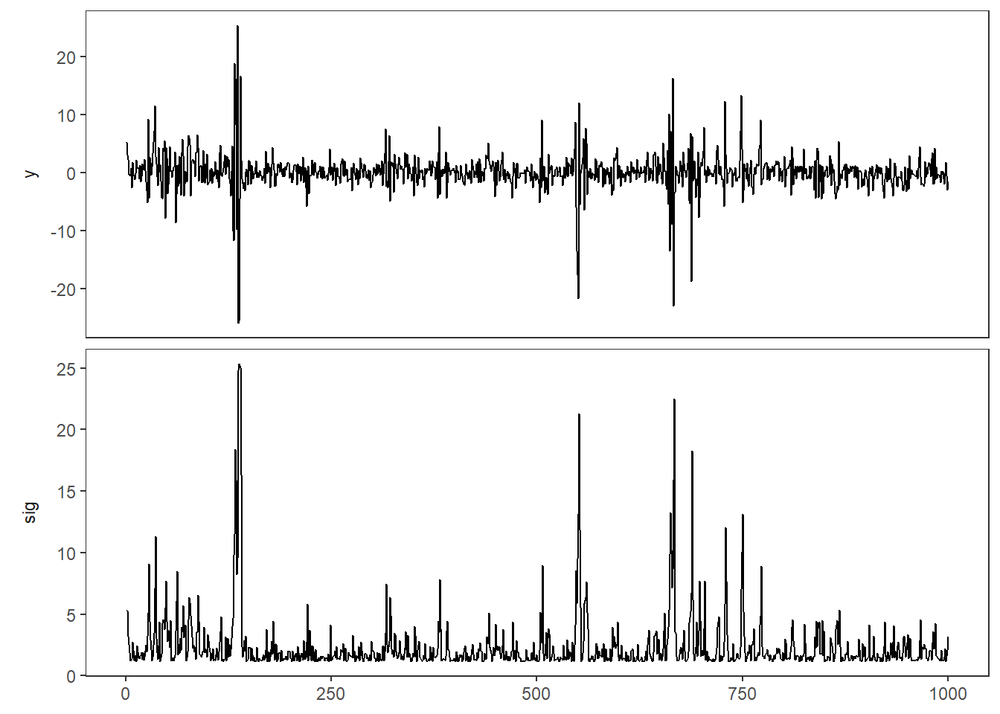
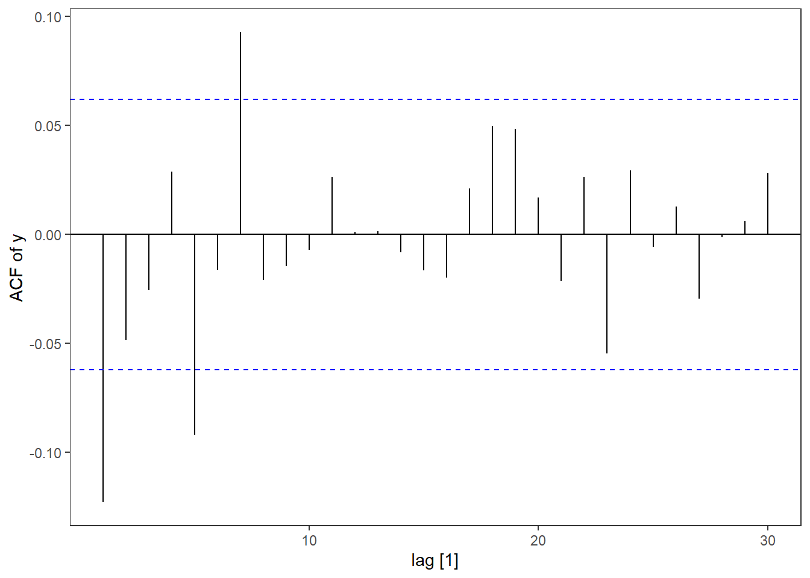
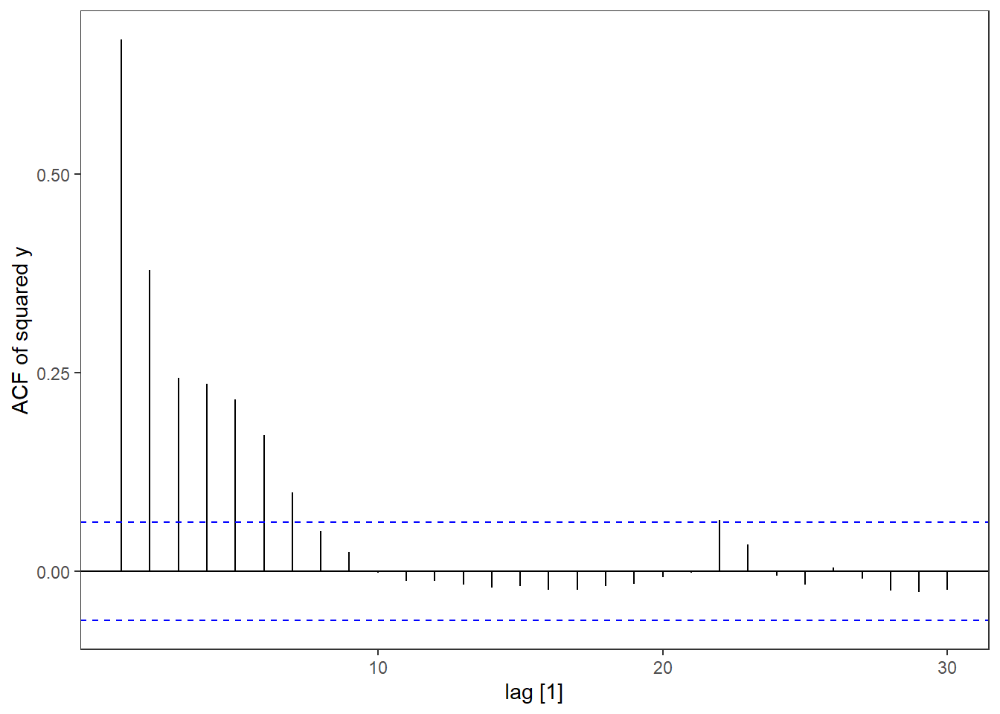
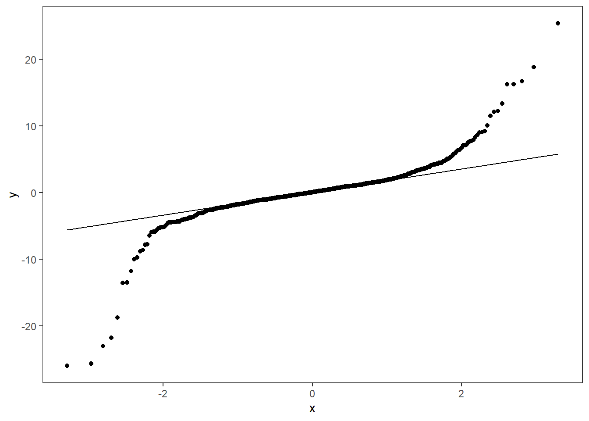
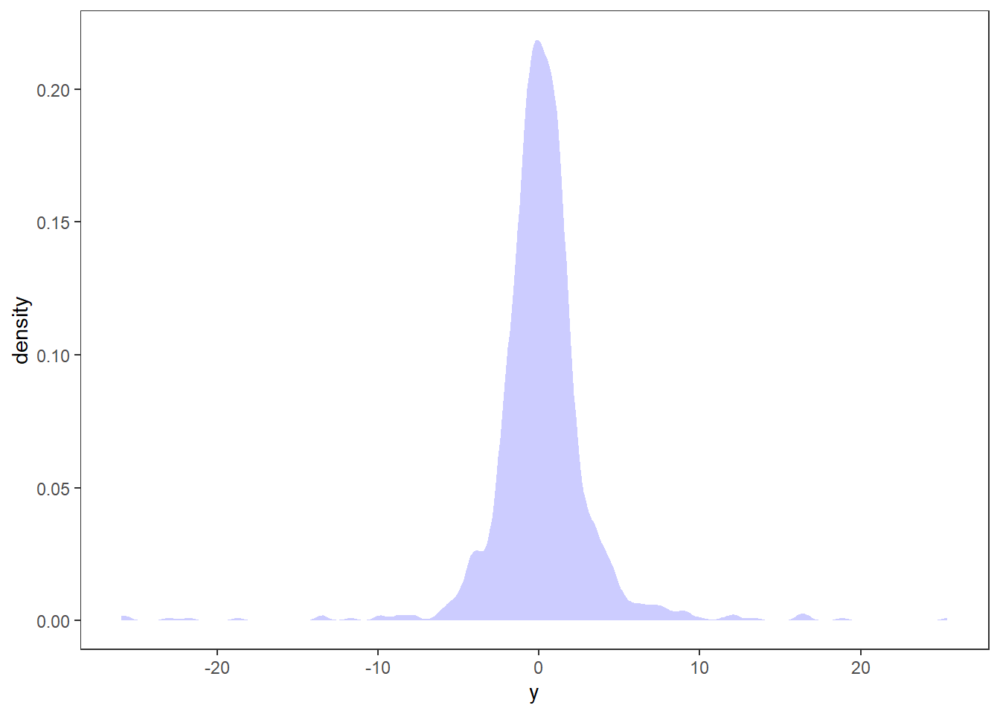

ARCH models
We start by introducing the first parameteric volatility model, the AutoRegressive Conditional Hetereskedasticity model (ARCH). This model was first introduce by Engle (1982). When writing this, his article has 32 369 citations on Google Scholar, and Robert Engle was awarded the Nobel Memorial Prize in Economic Sciences in 2003 with Clive Granger for “for methods of analyzing economic time series with time-varying volatility (ARCH)” (see nobelprize.org).
ARCH(1)
Let y_t denote the time series of interest, \sigma_t the volatility and \varepsilon_t \sim \text{iid WN}(0,1). Then an ARCH(1) model can be written as \begin{equation*} \begin{split} y_t &= \sigma_t \varepsilon_t,\\ \sigma_t^2 &= \omega + \alpha_1 y_{t-1}^2, \quad \omega>0,\, \alpha_1\ge0, \end{split} \end{equation*} where t is denotes the time index. As you can see, the conditional squared volatility depends on the previous squared observations. This means if we get a large return, either positive or negative, the conditional variance will be large in the next time step. With a high conditional variance the we would expect to see a large return, in either direction, also for the next time step, leading to a volatility cluster. With only one lagged variable in the model, this can “die out” quite quickly, but we will use this simple model to do some more detailed calculations before extending the model.
Moments and stationarity
Note that we assume here that y_t has zero expectation, because \mu=\mathbb E\, y_t = \mathbb E( \underbrace{\sigma_t\, \varepsilon_t}_\text{independent}) = \mathbb E\,\sigma_t \underbrace{\mathbb E\,\varepsilon_t}_{=0} = 0 We thus have that the variance of y_t is
\mathrm{Var}(y_t) = \underbrace{\mathbb E(y_t-\mu)^2}_{\mu=0} = \mathbb E\,y_t^2 = \mathbb E(\sigma_t^2\varepsilon_t^2) = \mathbb E\,\sigma_t^2 \underbrace{\mathbb E\,\varepsilon_t^2}_{=1}=\mathbb E\,\sigma_t^2
Let’s assume that y_t is stationary, implying that \mathrm{Var}(y_t) = \mathbb E\,\sigma_t^2 = \sigma^2. We then have that \mathbb E\,\sigma_t^2 = \omega+\alpha_1\mathbb E\,y_{t-1}^2 = \omega +\alpha_1 \mathbb E\,\sigma_{t-1}^2. Since \mathbb E\,\sigma_t^2 = \mathbb E\,\sigma_{t-1}^2 = \sigma^2, we get that \sigma^2 = \omega+\alpha_1\sigma^2 \quad\Leftrightarrow\quad \sigma^2 = \frac{\omega}{1-\alpha_1}. That is, if y_t is stationary the (unconditional) variance is \omega/(1-\alpha_1), requiring \alpha_1\in[0,1). This is in fact a necessary and sufficient condition for y_t being stationary.
ARCH vs AR
There is a strong link between ARCH models for volatility an AR models for the level. In fact, we can write a ARCH(1) model as an AR(1) model. By adding and subtracting \sigma_t^2, we get y_t^2 = \sigma_t^2\, \varepsilon_t^2 = \sigma_t^2 + \underbrace{\sigma_t^2(\varepsilon_t^2-1)}_{v_t}=\sigma_t^2 + v_t. It is easy to show that \mathbb E\,v_t =0 and under certain conditions (\mathbb E\,y_t^4<\infty) v_t will be a white noise process. We can then write y_t^2 = \sigma_t^2+v_t = \omega+\alpha_1 y_{t-1}^2 +v_t\quad \text{or} \quad (1-\alpha_1\,B)y_t^2 = \omega+v_t. Thus, we have written the squared ARCH(1) as an AR(1) time series with intercept.
The \varepsilon_t is often referred to as the innovations of the ARCH process, similar to innovation residuals in the fable environment. We can write a ARCH(1) only in terms of the parameters and the infinite past innovations. \sigma_t^2 = \omega + \alpha_1 y_{t-1}^2= \omega+\alpha_1\sigma_{t-1}^2\varepsilon_{t-1}^2=\omega+\alpha_1(\omega+\alpha_1 \sigma_{t-2}^2\varepsilon_{t-2}^2)\varepsilon_{t-1}^2. If we continue this iteration backwards, we end up with \sigma_t^2=\cdots = \omega+\omega\sum_{j=1}^\infty\alpha_1^j\varepsilon_{t-j}^2. This representation is actually the MA(\infty) representation corresponding to the AR(1). One can take expectations on both sides of this equation and derive the formula for the variance of a stationary ARCH(1) process.
ARCH(r)
Similar to the relationship between an AR(1) and an AR(p), we can set up a ARCH(r). We use r to denote the order of the ARCH model to distinguish it from the p and q of ARIMA, but in the literature it is quite common to use p to denote the order of an ARCH model.
An ARCH(r) model can be set up as y_t = \sigma_t\,\varepsilon_t,\quad \sigma_t^2 = \omega + \alpha_1\,y_{t-1}^2+\alpha_2\,y_{t-2}^2+\cdots \alpha_r\,y_{t-r}^2=\omega + \sum_{j=1}^r\alpha_jy_{t-j}^2, where \omega>0,\,\alpha_j\ge0, j=1,\ldots, r.
Including more lags, will make the ARCH model’s volatility more persistent, because a large return will stay in the model for some time. We could do similar calculations as above to show that the expectation of y_t is zero and if y_t is stationary the variance is given by \sigma^2= \frac{\omega}{1-\sum_{j=1}^r\alpha_j},\quad \sum_{j=1}^r\alpha_j<1 You can also find an AR(r) representation of y_t^2 using the same approach and assumptions as above.
Simulation
Let us simulate an ARCH(1) model by basic R code, assuming Gaussian innovations.
library(fpp3)
library(tidyverse)
# Setting seed for reproduciblity
set.seed(12345)
nT = 1000
a0 = 1.4
a1 = 0.95
# Initiating y and sigma
y <- sig <- rep(sqrt(a0/(1-a1)),
nT)
# Simulation:
for(t in 2:nT){
sig[t] <- sqrt(a0+a1*y[t-1]^2)
y[t] <- sig[t]*rnorm(1)
}
# tsibble object:
arch <- tsibble(
t = 1:nT,
y = y,
sig = sig,
index = t
)
# Plotting:
arch %>% pivot_longer(-t) %>%
mutate(name = factor(name, levels = c("y","sig"))) %>%
ggplot(aes(x=t,y=value)) +
geom_line()+
facet_wrap(~name, scales = "free_y", nrow=2,
strip.position = "left")+
theme(axis.title =element_blank())
In the top panel you see the time series (think of the Microsoft returns from the previous chapter). When \sigma_t is high, you see high variation in y_t. When \sigma_t is high, it stays high for some time, leading to volatility clusters.
Let’s look at the autocorrelation of the simulated time series and its squared values. We also do a qq-plot and a distribution plot.
arch %>% ACF(y) %>% autoplot() + labs(y = "ACF of y")
arch %>% ACF(y^2) %>% autoplot() + labs(y = "ACF of squared y")
arch %>% ggplot(aes(sample = y)) + geom_qq() +geom_qq_line()
arch %>% ggplot(aes(x = y)) + stat_density(fill = "blue", alpha = .2)



The patterns are very similar to the pattern we saw for Microsoft returns - as is the main goal of these models!
References
- Engle, R. F. (1982). Autoregressive conditional heteroscedasticity with estimates of the variance of United Kingdom inflation. Econometrica: Journal of the econometric society, 987-1007.